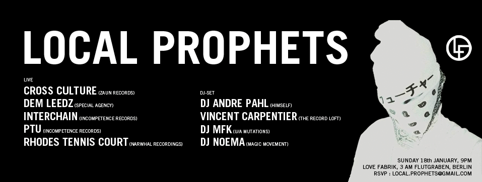

<html>
<head>
<meta http-equiv="Content-Type" content="text/html; charset=utf-8" />
<meta name="keywords" content=""/>
<meta name="description" content=""/>
<link rel="stylesheet" type="text/css" href="style.css" title="typostyle">


 <link rel="shortcut icon" href="d.ico"/>
   </head>

<style>


</style>


<title>LOCAL PROPHETS</title>
</head>


<body>


<center>

<br><br>


<br>
<br><br>

<br><br>
<div id="subscribeform">
<form class="pure-form" action="https://docs.google.com/forms/d/e/1FAIpQLSd8YzyZ-x4JknOHbXFZqo2OxDD_Bf3MSNAClNhBQtTktbv-wA/formResponse" method="POST" id="ss-form" target="hidden_iframe" onsubmit="submitted=true;">
<input type="text" name="entry.1342911203" value="" class="ss-q-short" id="entry_1342911203" dir="auto" aria-label="NAME" title="" placeholder="your name">
<input type="text" name="entry.112258700" value="" class="ss-q-short" id="entry_112258700" dir="auto" aria-label="EMAIL" title="" placeholder="your email">
<input type="hidden" name="draftResponse" value="[null,null,&quot;4400909811162587638&quot;]">
<input type="hidden" name="pageHistory" value="0">
<input type="hidden" name="fbzx" value="-5721412325105910540">
<input type="submit" name="submit" value="RSVP" id="ss-submit" class="pure-button pure-button-primary">
</form>
</div>


<br><br>
<h1 class="blink_me">↑ RSVP for LP #11 - 29/06/2019 ↑</h1>
<br>&nbsp;
<h4 class="announce">#localprophets</h4>
<br>&nbsp;<br>
<a href="https://soundcloud.com/localprophets" target="_blank"></a>
<br>&nbsp;<br>

&nbsp;<br>

<h3 class="announce">Local Prophets #10 Palais De Tokyo</h3><br>
<h4 class="announce">as part of the Manutention Residence<br>
Renart<br>
Colin Johnco<br>
NSDOS<br>
Aerodynamika<br>
Tez<br>
Oko<br>
Manaret<br>
Roni<br>
Nov 7, 2018 10:00 PM</h4>

<br>&nbsp;<br>&nbsp;<br>


<h3 class="announce">Local Prophets #9 PRAGMA Festival</h3><br>
<h4 class="announce">as part of the festival for cross-contextual confluence <a href="http://pragma.space">pragma.space</a><br>
Benoit B (DJ set)<br>
Kiara Lanier (live)<br>
Formamentis (DJ)<br>
Solidstait (DJ)<br>
Amanenn (DJ)<br>
Colin Johnco (DJ + live)<br>
DJ Papepi<br>
Aerodynamika (DJ + live)<br>&nbsp;<br>
Jun 30, 2018 10:00 PM – Jul 1, 2018 4:00 AM</h4>

<br>

<iframe width="50%" height="350" scrolling="no" frameborder="no" allow="autoplay" src="https://w.soundcloud.com/player/?url=https%3A//api.soundcloud.com/playlists/550362720&color=%2396aeb9&auto_play=false&hide_related=true&show_comments=false&show_user=true&show_reposts=false&show_teaser=false"></iframe>
<br>&nbsp;<br>

<br>


<br>&nbsp;<br>
<h4 class="announce" style="text-align: left; max-width: 500px;">
Local Prophets is an invite-only jamming session bringing together artists and musicians to share and exchange music, creations, inspiration and vibes.
<br><br>
This event series started in 2014 in Berlin through underground warehouse parties and now, after 3 years, we have hosted more than 50 artists while more than 3000 people took part in our events.
<br><br>
During every Local Prophets, we encourage people to play and dance together for the first time, to try things out that they’ve never tried before. We believe the event should be a catalyst for future adventures, creating starting points for new threads and collaborations.That’s why we don't limit ourselves with a single genre or styles, we try to create a beautiful journey through different moods and vibes ranging from ambient and disco to hip-hop and techno. We encourage both artists and styles to mix and to play together, to remember that first and foremost we don’t make music but we play music.
</h4>

<h2>~~~</h2>


<br>&nbsp;<br>
<h3 class="announce">Local Prophets #8 Paris</h3><br>
<h4 class="announce">La Station - Gare des Mines – Paris – France<br>
Mar 23, 2018 10:00 PM – Mar 24, 2018 6:00 AM</h4>
<br>&nbsp;
<h4 class="announce">Video Report</h4><br>
<iframe src="https://player.vimeo.com/video/277259646?title=0&byline=0&portrait=0" width="640" height="360" frameborder="0" webkitallowfullscreen mozallowfullscreen allowfullscreen></iframe>
<br>&nbsp;<br>
<a href="https://www.yesgolive.com/station/local-prophets"></a>

<br>&nbsp;<br>
<iframe width="50%" height="120" src="https://www.mixcloud.com/widget/iframe/?hide_cover=1&feed=%2Faerodynamika%2Flocal-prophets-8-paris-warmup-mix%2F" frameborder="0" ></iframe>
<br>&nbsp;<br>
<br>&nbsp;<br>

<h3 class="announce">LOCAL PROPHETS 7 / 3AM</h3>
<br>
<h4 class="announce">30/12/2017, Saturday, 19.00 to ∞. <br>
Live performances of 3AM event start at 7pm and go on until 0.00
<br>
Live music and DJ sets start at 0.30 and go on until 8.00<br>

Address: 3, Am Flutgraben, 12435 Berlin (U: Schlessisches Tor)
<br>
Lineup: NSDOS, Aerodynamika, Colin Johnco, Antoine 80, OS/X.Y. (live), Paranormal Unfall, Yanozoto, Formamentis, Solidstait (DJ sets)<br>
Installation: Erik Lig, Photo: Nailya Bikmurzina
</h4>

<br>&nbsp;<br>&nbsp;


<br>&nbsp;<br>

<br>&nbsp;<br>&nbsp;<br>

<iframe width="70%" height="166" scrolling="no" frameborder="no" allow="autoplay" src="https://w.soundcloud.com/player/?url=https%3A//api.soundcloud.com/tracks/397005393&color=%2396aeb9&auto_play=false&hide_related=true&show_comments=false&show_user=true&show_reposts=false&show_teaser=false"></iframe>

<br>&nbsp;<br>
<iframe width="50%" height="120" src="https://www.mixcloud.com/widget/iframe/?hide_cover=1&feed=%2FFormaMentis%2Fformamentis_djset_local_prophets_berlin_301217%2F" frameborder="0" ></iframe>
<br>&nbsp;<br>&nbsp;<br>


<br>&nbsp;<br>&nbsp;<br>


<br>&nbsp;<br>&nbsp;<br>
<h3>Local Prophets 6 Live Recordings</h3>
&nbsp;<br>
VVARHOLLA (live), MAIDEN OBEY (dj set), NSDOS (live),<br> 
YUGEN (dj set), DEM LEEDZ (dj set), <br>
SOLIDSTAIT+ FORMAMENTIS + MIETZSCHE (dj set)<br>
&nbsp;
DEM LEEDZ new EP release party
&nbsp;<br>&nbsp;<br>

<iframe width="60%" height="166" scrolling="no" frameborder="no" allow="autoplay" src="https://w.soundcloud.com/player/?url=https%3A//api.soundcloud.com/tracks/336694211&amp;color=%23ff5500&amp;auto_play=false&amp;hide_related=false&amp;show_comments=true&amp;show_user=true&amp;show_reposts=false&amp;show_teaser=true"></iframe>
&nbsp;
<iframe width="60%" height="166" scrolling="no" frameborder="no" allow="autoplay" src="https://w.soundcloud.com/player/?url=https%3A//api.soundcloud.com/tracks/336694209&amp;color=%23ff5500&amp;auto_play=false&amp;hide_related=false&amp;show_comments=true&amp;show_user=true&amp;show_reposts=false&amp;show_teaser=true"></iframe>
&nbsp;
<iframe width="60%" height="166" scrolling="no" frameborder="no" allow="autoplay" src="https://w.soundcloud.com/player/?url=https%3A//api.soundcloud.com/tracks/336694214&amp;color=%23ff5500&amp;auto_play=false&amp;hide_related=false&amp;show_comments=true&amp;show_user=true&amp;show_reposts=false&amp;show_teaser=true"></iframe>
&nbsp;
&nbsp;&nbsp;<br>&nbsp;<br>&nbsp;
&nbsp;<br>&nbsp;
<h3>Previous Events & Lineup</h3>
<br>&nbsp;


&nbsp;<br>&nbsp;<br>
<iframe width="60%" height="450" scrolling="no" frameborder="no" src="https://w.soundcloud.com/player/?url=https%3A//api.soundcloud.com/playlists/283481108&amp;color=ff5500&amp;auto_play=false&amp;hide_related=false&amp;show_comments=true&amp;show_user=true&amp;show_reposts=false"></iframe>
<br>&nbsp;<br>&nbsp;<br>&nbsp;<br>


<br><br>&nbsp;&nbsp;<br><br><br>&nbsp;&nbsp;&nbsp;<br>&nbsp;<br>
<iframe width="500" height="450" scrolling="no" frameborder="no" src="https://w.soundcloud.com/player/?url=https%3A//api.soundcloud.com/playlists/242931480&amp;color=ff5500&amp;auto_play=false&amp;hide_related=false&amp;show_comments=true&amp;show_user=true&amp;show_reposts=false"></iframe>


<br>&nbsp;<br>
<br>&nbsp;<br>

<script type="text/javascript">var submitted=false;</script>

<iframe name="hidden_iframe" id="hidden_iframe"
style="display:none;" onload="if(submitted)
{
alert('Thank you, now we know you are coming!');
window.location='http://soundcloud.com/localprophets';
}"></iframe>


<br><br>&nbsp;<br><br>

<a href="https://soundcloud.com/localprophets" target="_blank"></a>


<br><br><br>&nbsp;<br><br><br><br>&nbsp;<br>
<h3 class="announce">previous events</h3><br>


<br><br><br><br>


<br><br><br><br>
<iframe width="957" height="450" scrolling="no" frameborder="no" src="https://w.soundcloud.com/player/?url=https%3A//api.soundcloud.com/playlists/182849474&amp;auto_play=false&amp;hide_related=false&amp;show_comments=true&amp;show_user=true&amp;show_reposts=false&amp;visual=true"></iframe>
<br><br><br><br>

<br><br><br><br>

<iframe width="477" height="80" scrolling="no" frameborder="no" src="https://w.soundcloud.com/player/?url=https%3A//api.soundcloud.com/playlists/72294956&amp;auto_play=false&amp;hide_related=false&amp;show_comments=true&amp;show_user=true&amp;show_reposts=false&amp;visual=true"></iframe>
<iframe width="477" height="80" scrolling="no" frameborder="no" src="https://w.soundcloud.com/player/?url=https%3A//api.soundcloud.com/playlists/72294434&amp;auto_play=false&amp;hide_related=false&amp;show_comments=true&amp;show_user=true&amp;show_reposts=false&amp;visual=true"></iframe>
<br><br>

<br><br><br>&nbsp;<br>
<br><br><br>&nbsp;<br>
<h4 class="announce">local prophets is a non-for-profit invite-only jamming session 
<br>
bringing together the locals of all breeds and activities to share and exchange music, creations, inspiration and vibes<br>
every session is a starting point for new threads and collaborations <br>
produced by johnk&ocirc;&ocirc;l and special agency</h4><br>
<br><br><br>&nbsp;<br>
<br><br><br>&nbsp;<br>

<script>
  (function(i,s,o,g,r,a,m){i['GoogleAnalyticsObject']=r;i[r]=i[r]||function(){
  (i[r].q=i[r].q||[]).push(arguments)},i[r].l=1*new Date();a=s.createElement(o),
  m=s.getElementsByTagName(o)[0];a.async=1;a.src=g;m.parentNode.insertBefore(a,m)
  })(window,document,'script','//www.google-analytics.com/analytics.js','ga');

  ga('create', 'UA-27849174-7', 'auto');
  ga('send', 'pageview');

</script>

</body>
</html>
